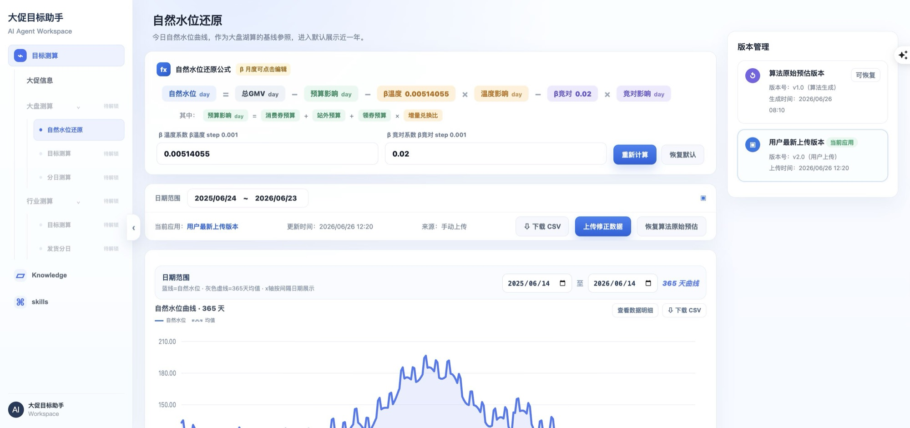

大促目标 AI 助手
让 AI 测算从黑盒结果，变成可协作的决策流程
问题
目标测算依赖表格、文档与专家经验，输入分散、过程难追溯、结果难解释。用户不仅需要一个数字，更需要知道它从哪里来、何时可用、如何修正。
设计命题
如何把复杂模型包装成业务人员能够独立完成的工作流，同时保留专家校准、来源追溯和结果导出能力？
01.1
三个关键体验判断
-
以业务流程组织 AI，而不是以聊天组织业务
导航对应“大促信息 → 自然水位 → 大盘目标 → 行业拆分”，AI 对话作为每一步的解释与辅助，而非唯一入口。
-
让来源、状态和依赖就近可见
知识、Skill、完整度、校验结果与下游引用紧邻当前任务，减少跨页面确认与口径错用。
-
把不可逆动作留给人
配置、生成、确认与发布分层，草稿不会静默覆盖下游，保留专家修正和结果追责链路。
业务结果
预估准确率 78% → 90%+
效率结果
单次预估 6 pd → 2 pd
产品结果
全周期预算使用率 99.4%
消费券策略 Agent
把复杂券策略拆成可推演、可比较、可执行的工作台
问题
券策略同时受到增长目标、预算、用户价值、类目价格带、渠道成本和实验结论约束。传统对话式 AI 容易直接给答案，却无法让团队确认前提与执行边界。
设计命题
如何让 Agent 先暴露假设，再把建议转译成波次、券组、人群、渠道和实验护栏，形成真正可执行的策略包？
02.1
从推荐到执行的四层结构
确认增长目标、预算上限和成本红线。
并列比较钱效、均衡、增长三套候选。
展开为波次、券组、人群与渠道矩阵。
绑定实验分流、指标和止损条件。
业务验证
人均 GMV +0.46%
交易验证
人均支付订单 +0.24%
能力复用
沉淀为营销 AI 投放基座
MY DESIGN LENS
我如何设计 AI 产品体验
- 01先定义决策，再定义界面
明确用户在什么条件下做什么判断，避免把复杂业务压缩成一个生成按钮。
- 02让 AI 的依据可见
来源、口径、置信度和缺失项应靠近建议，而不是藏在说明文档里。
- 03把高频路径做短
默认给结论和下一步动作，复杂参数、明细与推导按需下钻。
- 04保留人的最终控制
支持编辑、校验、回退和确认，让 AI 增强判断，而不是替代责任。
ABOUT
产品经理背景，正在做更完整的 AI 产品体验。
产品经验覆盖 B 端商家、C 端消费者、AI 基础设施与 AI 应用，具备从数据基建到 Agent 产品化的全链路落地能力。做事务实，执行投入度高，对新技术和新业务方向有较强的探索意愿与快速学习能力。
- 教育
- 南京大学 · 企业管理硕士 / 市场营销本科
- 能力
- 产品策略、交互原型、数据分析、AI Coding
- 工具
- Figma、Axure、SQL、Codex、Trae